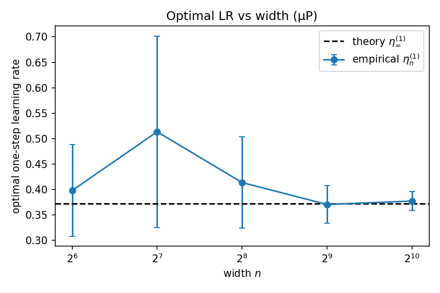
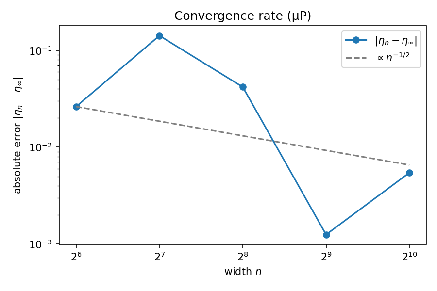

A Proof of Learning Rate Transfer Under μP
Tuning the learning rate is the most expensive ritual in deep learning: a value that is perfect for a small model is often unstable or far too timid for a large one, so practitioners re-sweep the learning rate every time they scale up. The maximal-update parametrization (μP) promises to end that ritual — under μP the optimal learning rate found on a narrow network is supposed to transfer to a much wider one. This post follows A Proof of Learning Rate Transfer Under μP (Soufiane Hayou, AISTATS 2026), which turns that empirical folklore into a theorem for deep linear networks: the optimal one-step learning rate has a deterministic infinite-width limit, and finite-width networks approach it at a quantified rate. We restate the result, then verify it on a deep linear MLP whose numbers are reproduced by the companion notebook.
The idea: the optimal learning rate stops moving
Fix a network architecture and a dataset, and let only the width $n$ vary. For each width there is some learning rate $\eta_n$ that makes the very first gradient step reduce the loss as much as possible. The question the paper answers is: what happens to $\eta_n$ as $n\to\infty$?
Under the standard parametrization (SP) the answer is "it keeps moving" — the right step size depends on width, which is exactly why a learning rate tuned at one scale is wrong at another. Under μP, the layers are initialized and the updates are scaled so that every hidden unit receives an $O(1)$ update regardless of width. The consequence proved here is that the optimal learning rate converges to a fixed number:
The model and the μP parametrization
The analysis uses a deep linear MLP — a stack of matrix multiplications with no nonlinearity. Linearity is what makes everything computable in closed form while still exhibiting the depth- and width-dependent behavior that matters for the proof. The network maps an input $x\in\mathbb R^d$ to a scalar through $L$ hidden layers:
- $W_0\in\mathbb R^{n\times d}$ — the input layer, held frozen at init;
- $W_1,\dots,W_L\in\mathbb R^{n\times n}$ — the trained hidden matrices;
- $V\in\mathbb R^{n}$ — the readout vector, also held frozen.
Freezing $W_0$ and $V$ isolates the part of the network whose scaling drives the result. The μP initialization sets the variance of each layer so that signals and updates stay $O(1)$ as the width grows:
In code: W0 = randn(n,d)/√d, W_l = randn(n,n)/√n, and the μP readout
V = randn(n)/n.
One gradient step and the optimal learning rate
Training is full-batch gradient descent on the mean-squared error over $m$ samples $\{(x_i,y_i)\}_{i=1}^m$:
Starting from the μP initialization, a single gradient-descent step updates only the trained hidden matrices, with the μP rule that the effective learning rate is not width-scaled:
Let $\mathcal L_n^{(1)}(\eta)$ be the loss after that one step. The empirical optimal one-step learning rate at width $n$ is whatever value of $\eta$ minimizes it over a compact interval $I$:
Because all candidate learning rates start from the same initialization, the gradient $\nabla_{W_\ell}\mathcal L_n^{(0)}$ is identical for every $\eta$ — it is computed once and reused while sweeping $\eta$, which is exactly what the notebook does.
The infinite-width learning rate, in closed form
The central object on the theory side is the normalized Gram matrix of the inputs — a quantity that depends only on the data, not on the network width:
In the infinite-width limit the random network behaves like a deterministic linear map governed by $K$, and the one-step loss becomes an exact quadratic in $\eta$. Minimizing that quadratic gives the optimal learning rate in closed form:
The formula is well defined whenever $Ky\neq 0$, which the theorem assumes. Depth $L$ enters as a simple $1/L$ factor — deeper networks want proportionally smaller steps — and the data enters only through the Rayleigh-type quotient $y^\top K y/\lVert Ky\rVert^2$. Notably, the width $n$ does not appear: this is the fixed target every finite-width network is converging to.
The convergence claim
The main theorem is not just that the limit exists, but that finite-width networks reach it at a controlled rate. Treating the random initialization as the source of randomness,
In words: the gap between the best finite-width step size and the infinite-width prediction shrinks like $1/\sqrt n$, with fluctuations across random seeds of the same order. Doubling the width should roughly cut both the typical error and its seed-to-seed spread by a factor $\sqrt 2$. That is the quantitative content behind "learning rates transfer": not only is there a fixed answer, but moderate widths are already close to it.
The minimal experiment
To check the claim we instantiate exactly the setting above: a deep linear μP MLP of depth $L=3$, trained for a single full-batch gradient step on a fixed synthetic linear-regression dataset, sweeping width across $\{64,128,256,512,1024\}$. The data is generated once and reused at every width — the theorem studies width asymptotics with the data held fixed — from
For each width and each of three initialization seeds we compute the empirical $\eta_n^{(1)}$ by a grid search over $\eta\in[0,\,4\,\eta_\infty^{(1)}]$ (the search interval is built to contain the theoretical value), refined locally around the best grid point, and compare it against the closed-form $\eta_\infty^{(1)}$. The exact configuration:
| Setting | Value | Setting | Value |
|---|---|---|---|
| depth $L$ | 3 | parametrization | μP ($V\sim1/n$) |
| widths $n$ | 64, 128, 256, 512, 1024 | init seeds | 1, 2, 3 |
| samples $m$ | 500 | input dim $d$ | 1 |
| noise std $\sigma$ | 0.10 | data seed | 123 |
| optimizer | full-batch GD, 1 step | precision | float64 |
| $\eta$ grid | 120 points on $[0,4\eta_\infty]$ | local refine | 60 points |
Results
The closed-form target for this dataset is $\eta_\infty^{(1)}=0.37176$. The empirical optimum starts noisy at small width and tightens onto that line as the network grows — the seed-to-seed spread shrinking right alongside the mean.


Per-width numbers
Averaged over the three initialization seeds (data seed 123), with $\eta_\infty^{(1)}=0.371763$:
| width $n$ | $\eta_n^{(1)}$ mean | std (3 seeds) | $\lvert\eta_n^{(1)}-\eta_\infty^{(1)}\rvert$ | rel. error |
|---|---|---|---|---|
| 64 | 0.39797 | 0.0899 | 0.02621 | 7.0% |
| 128 | 0.51340 | 0.1885 | 0.14164 | 38.1% |
| 256 | 0.41358 | 0.0898 | 0.04181 | 11.2% |
| 512 | 0.37051 | 0.0370 | 0.00125 | 0.3% |
| 1024 | 0.37722 | 0.0187 | 0.00545 | 1.5% |
Errors are computed on the seed-averaged mean $\eta_n^{(1)}$. The optimal post-step loss is essentially identical across all widths and seeds ($\approx 5.076\times10^{-3}$), confirming each run found a genuine minimum of $\mathcal L_n^{(1)}(\eta)$.
A caveat in the spirit of honest reporting: a least-squares fit of $\log\lvert\eta_n-\eta_\infty\rvert$ against $\log n$ over these five widths gives a slope of $\approx-1.14$, steeper than the theoretical $-1/2$. The theorem is an asymptotic, high-probability upper bound — it guarantees the error decays at least as fast as $n^{-1/2}$, not exactly — and with only five widths, one of them an outlier, the fitted slope is dominated by the noisy small-width points rather than a clean asymptotic rate. The robust takeaway is the one the theory cares about: the error and its spread both vanish with width, and a moderate width already pins the learning rate to within a couple of percent of the closed-form infinite-width value.
Reproduce it
The companion notebook re-runs the whole experiment from scratch with only
torch, numpy, and matplotlib. It builds the μP linear MLP,
computes the closed-form $\eta_\infty^{(1)}=\tfrac{m}{L}\,y^\top Ky/\lVert Ky\rVert^2$, performs
the grad-once one-step learning-rate search across widths and seeds, and regenerates both figures
— reproducing the per-width table above ($\eta_\infty=0.37176$, error at $n=1024$ of
$5.5\times10^{-3}$) to floating-point precision.